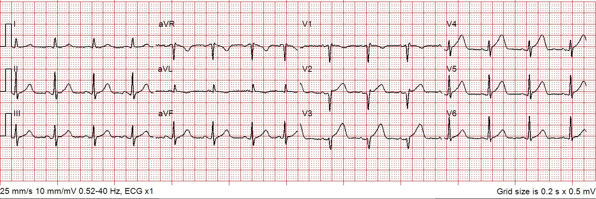
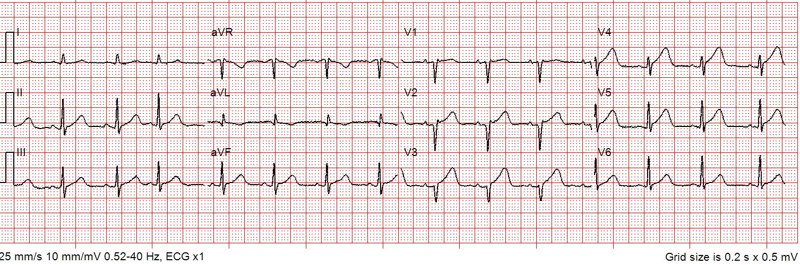
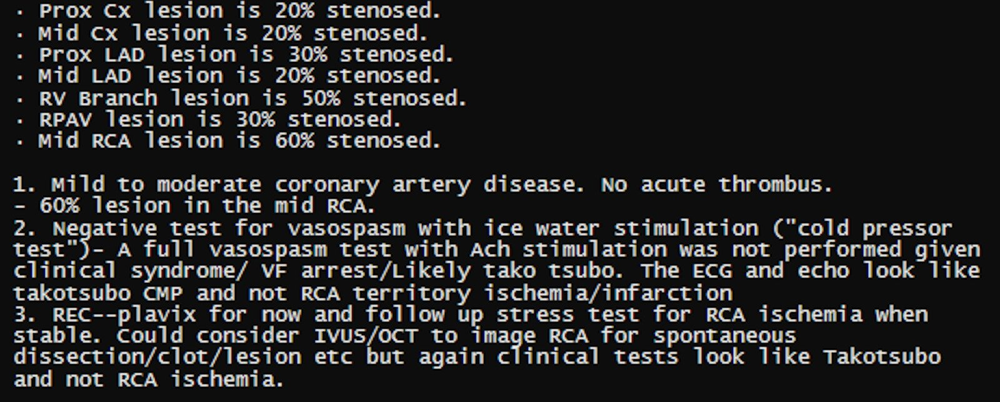
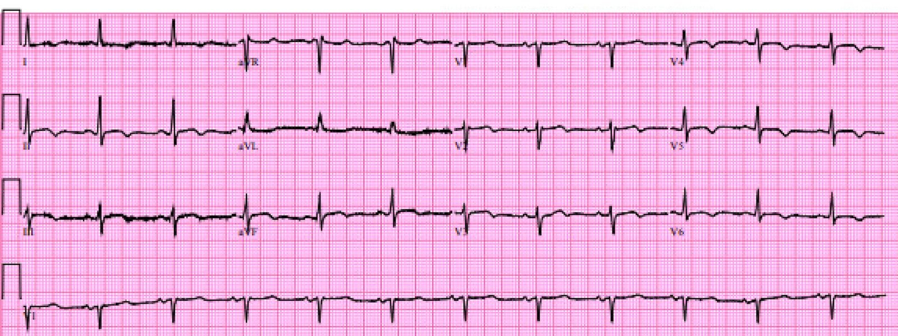
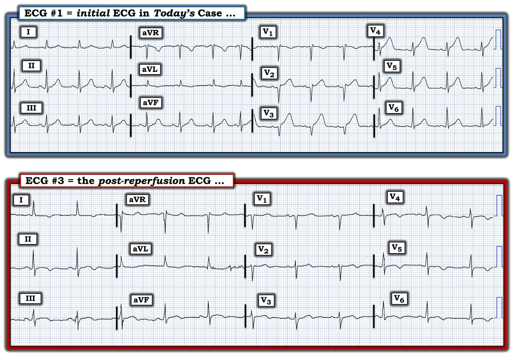
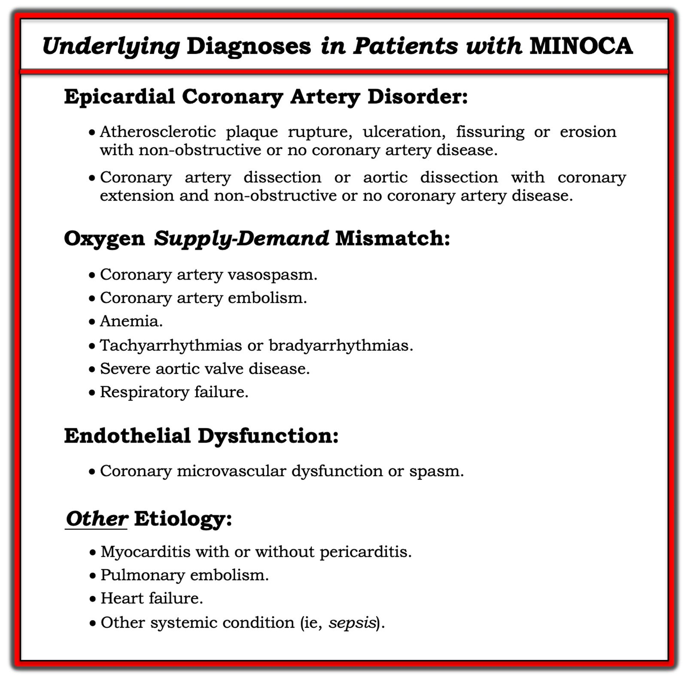

30/11/2022 — Khi đến khoa cấp cứu, một bác sĩ cấp cứu lâu năm xem điện tâm đồ và nói “Chẳng có gì đáng chú ý lắm.”
Bản dịch tiếng Việt của bài "Upon arrival to the emergency department, a senior emergency physician looked at the ECG and said “Nothing too exciting.”" – Dr. Smith’s ECG Blog. Giữ nguyên toàn bộ 8 hình ảnh của bản gốc.
Ca bệnh này do Spencer Schwartz cung cấp, một nhân viên cấp cứu ngoài viện xuất sắc của Hennepin EMS, thuộc nhóm chuyên biệt “P3” của Hennepin EMS – nhóm được đào tạo thêm về các thủ thuật nâng cao như đặt nội khí quản nhanh (RSI), mở màng phổi, thuốc vận mạch và siêu âm trước viện.
Bệnh nhân nữ, khoảng giữa 60 tuổi, tiền sử tăng huyết áp, rối loạn lipid máu và trào ngược dạ dày-thực quản (GERD), gọi 911 vì đau ngực. Đội cứu hỏa – ở địa phương này hoạt động ở cấp kỹ thuật viên cấp cứu y tế (EMT) – đến trước chúng tôi và đã cho
bệnh nhân dùng 324 mg aspirin liều thấp vì lo ngại hội chứng vành cấp (ACS).
Một phụ nữ khoảng giữa 60 tuổi, tiền sử tăng huyết áp, rối loạn lipid máu và GERD, gọi 911 vì đau ngực. Khi nhân viên cấp cứu ngoài viện đến, bà tự đi ra khỏi nhà, không có vẻ khó chịu, nhưng vã mồ hôi. Bà kể bị khó chịu ở ngực từng cơn trong một tuần, và đã đến phòng khám một ngày trước đó, nơi được ghi điện tâm đồ 12 chuyển đạo và nghe nói là “bình thường”. Cơn đau hôm nay giống các đợt “trào ngược” trước đây; đau lan lên cổ và hàm.
Dấu hiệu sinh tồn: HA 188/72, tần số tim 88 và SpO2 99% khi thở khí phòng.
Sau đó điện tâm đồ 12 chuyển đạo đầu tiên của chúng tôi được ghi lúc 0926.


Bạn nghĩ gì?
Đây là diễn giải của Spencer:
Nhịp xoang, phức bộ QRS hẹp, trục bình thường. V1 có đoạn ST chênh lên 0.5 mm, V2 và V3 chênh lên 1 mm, V4 chênh lên 2 mm và V5 chênh lên khoảng 1.5 mm. Đáng chú ý hơn, có sóng T tối cấp (hyperacute T waves) ở V3 đến V5. Các sóng T này quá lớn so với phức bộ QRS tương ứng, đáy rộng, và có hình dạng đối xứng hoặc gần đối xứng.
Ngoài ra còn có sóng T đảo ngược ở aVL kèm ST chênh xuống rất ít. Sóng T ở các chuyển đạo dưới có vẻ đang trở nên tối cấp, đáy rộng và lớn không tương xứng so với phức bộ QRS. Sóng T ở các chuyển đạo dưới cũng có vẻ khởi đầu dốc nhanh từ điểm J, hình dạng gần đối xứng.
Các dấu hiệu này gợi ý tắc LAD "vòng qua mỏm" (wraparound).
Smith: Tôi sẽ khẳng định mạnh hơn. Các dấu hiệu này có giá trị chẩn đoán OMI vùng mỏm do tắc LAD.
Một điện tâm đồ khác được ghi 5 phút sau, ngay trước khi đến bệnh viện:


Tương tự
Bệnh nhân được chuyển đến một bệnh viện ngoại ô gần đó có khả năng làm PCI, trong khi đồng nghiệp của tôi chăm sóc bà.
Khi đến khoa cấp cứu, một bác sĩ cấp cứu lâu năm xem điện tâm đồ và nói “Chẳng có gì đáng chú ý lắm.”
Sau đó bà bắt đầu than chóng mặt dữ dội và nhanh chóng rơi vào rung thất, nhân viên bệnh viện tiến hành hồi sức. Bà được khử rung và hồi sức thành công.
Có vẻ như việc bà bị ngừng tim lại là điều may mắn; nếu không, điện tâm đồ của bà đã bị bỏ qua.
Smith: điện tâm đồ và bệnh cảnh lâm sàng này có giá trị chẩn đoán tắc LAD. Tôi cần "tiêm phòng" cho bạn trước các ý kiến dưới đây, bằng cách nói rõ với mọi người rằng đây KHÔNG phải là điện tâm đồ người ta thấy trong bệnh cơ tim Takotsubo. Đây cũng KHÔNG phải bệnh cảnh lâm sàng của Takotsubo (một tuần đau ngực từng cơn). Takotsubo là một biến cố đột ngột, không phải biến cố có đau thắt ngực tăng dần (crescendo angina). OMI vùng mỏm có hình ảnh siêu âm giống Takotsubo, và vì thế bắt chước Takotsubo.
Diễn biến tại bệnh viện
Bệnh nhân được đưa cấp cứu đến
phòng thông tim (cath lab), kết quả không thấy bệnh động mạch vành
đáng kể nào, nhưng ghi nhận EF giảm, phù hợp
với bệnh cơ tim Takotsubo.
Đây là kết quả thông tim:


Siêu âm tim:
Giảm động nặng toàn bộ mỏm thất trái và đoạn mỏm của tất cả các thành.
EF 30-35%
Troponin
Troponin I độ nhạy cao đạt đỉnh 9,324 ng/L
(tương đương khoảng 9.32 ng/mL theo các xét nghiệm thế hệ 4 và cũ hơn.)
Điều này quan trọng vì mức tăng troponin I trong Takotsubo không cao đến thế. Trong một bài báo gần đây (J Electrocardiol năm nay, xem tài liệu tham khảo bên dưới), nồng độ đỉnh troponin I ở Takotsubo biểu hiện ST chênh lên có trung vị 1.02 ng/mL [IQR: 0.46, 2.35].
Lưu ý 1: Nồng độ thấp hơn đáng kể ở Takotsubo biểu hiện bằng sóng T đảo ngược.
Lưu ý 2: Bài báo này không nói rõ là troponin I hay T, nhưng tôi đã liên hệ với cơ sở đó và họ chỉ dùng troponin I trong giai đoạn đó.
Tài liệu tham khảo về troponin: Xenogiannis I, Vemmou E, Nikolakopoulos I, và cs. The impact of ST-segment elevation on the prognosis of patients with Takotsubo cardiomyopathy. J Electrocardiol [Internet] 2022; Truy cập tại: http://dx.doi.org/10.1016/j.jelectrocard.2022.09.009
Ý kiến của khoa tim mạch:
Bệnh cơ tim Takotsubo (EF 30-35%)
Ngừng tim do rung thất (V Fib)
QTc kéo dài
NSTEMI (Smith bình luận: đây là NSTEMI hay là Takotsubo? — hai thứ này hoàn toàn khác nhau)
Bệnh động mạch vành một nhánh mức độ vừa.
Sau đó họ chụp MRI:
Bệnh nhân được chụp MRI tim ngày 4/10, cho thấy chức năng tâm thu hai thất giảm nhẹ. LVEF 51% và RVEF 49%, giảm động nặng các đoạn vách xa, trước xa, mỏm và dưới xa.
Ghi nhận tăng hàm lượng dịch trong cơ tim và màng ngoài tim. Ngấm thuốc muộn cho thấy sẹo nhỏ dưới nội tâm mạc ở các đoạn vách xa, mỏm và dưới xa, phù hợp với sẹo trong vùng cấp máu của LAD. Các dấu hiệu phù hợp với nhồi máu trong vùng cấp máu của LAD (nhiều khả năng mới xảy ra).
Để bổ sung thêm bằng chứng, đây là điện tâm đồ sau tái tưới máu:


Có sóng T đảo ngược phần cuối (giống hệt Wellens kiểu A).
Mặc dù trong Takotsubo người ta thấy sóng T đảo ngược đối xứng lan tỏa xuất hiện, kèm QT dài, người ta KHÔNG thấy hình ảnh Wellens kiểu A trong Takotsubo.
Tôi đã có thể nói với bạn điều này (và đã nói rồi) mà không cần MRI. Toàn bộ ca này không phù hợp với Takotsubo. Không thấy bệnh động mạch vành có ý nghĩa huyết động trên chụp mạch vành không có nghĩa là không phải OMI. Để chứng minh không có nứt vỡ mảng xơ vữa, bạn cần làm siêu âm trong lòng mạch (IVUS). Chụp mạch vành chỉ là “chụp lòng mạch” (lumenogram); phần lớn mảng xơ vữa nằm NGOÀI LÒNG MẠCH!! Chỉ có thể thấy nó bằng IVUS.
Những ca như vậy được xếp vào nhóm MINOCA (nhồi máu cơ tim với động mạch vành không tắc nghẽn – Myocardial Infarction with Non-Obstructed Coronary Arteries). MINOCA có nhiều nguyên nhân. Một trong những nguyên nhân thường gặp nhất là nứt vỡ một mảng xơ vữa không gây tắc nghẽn, kèm hình thành huyết khối và OMI, rồi huyết khối tự ly giải và để lại một động mạch thông rộng. Từ bệnh sử và điện tâm đồ, chúng ta có thể biết rằng ca này là MINOCA do tắc LAD thoáng qua bởi huyết khối, sau đó huyết khối ly giải. Không cần phải có bệnh mạch vành tắc nghẽn thì mới có huyết khối gây tắc! Thực tế, phần lớn nhồi máu cơ tim cấp xảy ra ở các động mạch vành không có hẹp đáng kể về huyết động (xem bài tổng quan trên New England Journal bên dưới)
Đây là một đoạn trích từ một bài tổng quan trên NEJM:
Bệnh sinh của hội chứng vành cấp
Các phát hiện từ những nghiên cứu lâm sàng và giải phẫu bệnh đã thách thức những quan niệm phổ biến này về đặc điểm sinh lý bệnh của xơ vữa động mạch vành và cách điều trị bệnh.1-4 Đáng ngạc nhiên là các nghiên cứu chụp mạch vành liên tiếp cho thấy mảng xơ vữa tại vị trí tổn thương thủ phạm của một nhồi máu cơ tim cấp sau này thường không gây hẹp đủ nặng để hạn chế dòng chảy, như thấy trên lần chụp mạch vành trước đó. Theo dõi bằng chụp mạch đáp ứng với điều trị tiêu sợi huyết cho thấy sau khi huyết khối gây bệnh được ly giải, chỗ hẹp bên dưới thường không phải là nguyên nhân gây hẹp nguy kịch của động mạch. Trong một nghiên cứu chụp mạch tiến cứu ở bệnh nhân được can thiệp qua da vì bệnh động mạch vành, chỉ một nửa số biến cố xảy ra sau đó xuất phát từ các tổn thương hẹp đủ nặng để có chỉ định can thiệp tại thời điểm tái thông mạch.5 Chụp mạch máu cắt lớp vi tính (CT), vốn cho phép đánh giá thành động mạch (chứ không chỉ lòng mạch), cho thấy đặc điểm của mảng xơ vữa liên quan đến hội chứng vành cấp gồm tỷ trọng thấp (tức là ít hoặc không vôi hóa) và thành động mạch giãn ra phía ngoài, một quá trình có xu hướng dung nạp sự lớn lên của mảng xơ vữa trong khi hạn chế tối đa sự lấn vào lòng mạch.6-8 Siêu âm trong lòng mạch cho thấy trong hội chứng vành cấp, tổn thương thủ phạm thường nằm ở đoạn gần so với vị trí hẹp nặng nhất – vốn là mục tiêu truyền thống của các liệu pháp tái thông mạch.9 Sự không tương quan này giữa mức độ hẹp và khả năng gây hội chứng vành cấp giúp giải thích vì sao nhồi máu cơ tim thường xảy ra mà không có triệu chứng báo trước là cơn đau thắt ngực do tăng nhu cầu, vốn sẽ xuất hiện nếu có hẹp mức độ nặng.
Những điểm cần học:
1. Hãy học cách nhận ra sóng T tối cấp
2. Nhiều nhân viên cấp cứu ngoài viện chẩn đoán OMI giỏi hơn hẳn bất kỳ bác sĩ nào (cấp cứu hay tim mạch)
3. Đừng để bác sĩ hội chẩn của bạn chẩn đoán Takotsubo khi rõ ràng đó là OMI.
Ở đây tôi không có đủ thời gian và sức lực để viết một bài tổng quan về MINOCA.
Nhưng có vài điểm:
Định nghĩa MINOCA dựa trên việc bệnh nhân thỏa mãn cả ba tiêu chuẩn chẩn đoán chính, cụ thể là:
1) Định nghĩa toàn cầu về nhồi máu cơ tim cấp (đòi hỏi có thiếu máu cục bộ);
2) có động mạch vành không tắc nghẽn trên chụp mạch (định nghĩa là không có hẹp động mạch vành ≥50%) ở bất kỳ động mạch nào có thể liên quan đến nhồi máu; và
3) không có một nguyên nhân đặc hiệu, rõ ràng về lâm sàng nào khác giải thích biểu hiện cấp tính.
MINOCA có thể do: co thắt mạch vành, rối loạn chức năng vi mạch vành, tổn thương phá vỡ mảng xơ vữa, huyết khối/thuyên tắc mạch vành tự phát, và bóc tách động mạch vành.
Các rối loạn cơ tim, bao gồm viêm cơ tim, bệnh cơ tim Takotsubo và các bệnh cơ tim khác, có thể TRÔNG GIỐNG MINOCA cho đến khi được khảo sát thêm.
https://www.jacc.org/doi/abs/10.1016/j.jcmg.2020.02.037 (bài báo trên tạp chí JACC: Cardiovascular Imaging)
Chúng ta biết rằng phần lớn nhồi máu cơ tim cấp típ 1 do nứt vỡ mảng xơ vữa và huyết khối xảy ra ở các tổn thương hẹp dưới 50% (xem tài liệu của Libby). Điều này vẫn đúng dù đã biết các chỗ hẹp khít hơn dễ tạo huyết khối hơn. Lý do là ở cấp độ quần thể: trong dân số có nhiều chỗ hẹp mức độ vừa hơn rất nhiều so với chỗ hẹp khít, nên nhiều nhồi máu cơ tim phát sinh từ những chỗ hẹp vừa này hơn.
Ngay cả ở những bệnh nhân có chỗ hẹp mức độ vừa bị huyết khối, phần lớn hình chụp mạch vành cho thấy hẹp trên 50% sau biến cố. Tuy nhiên, hoàn toàn có thể hình dung rằng nhiều huyết khối ở các tổn thương không tắc nghẽn ly giải hoàn toàn và không để lại chỗ hẹp trên hình chụp mạch vành cùng ngày hoặc ngày hôm sau. Huyết khối mạch vành ly giải hoàn toàn rõ ràng là có thể xảy ra, nhưng mức đóng góp của nó vào MINOCA thực sự chưa được biết, vì hiếm khi có khảo sát đầy đủ. Vấn đề này khó nghiên cứu vì hình ảnh động mạch trên chụp mạch không hoàn hảo, và không phải lần chụp mạch vành nào cũng dùng siêu âm trong lòng mạch (IVUS) để đánh giá mảng xơ vữa không thấy được, hoặc mảng xơ vữa bị nứt vỡ và loét mà chụp mạch không thể thấy.
Hơn nữa, biểu hiện lâm sàng đau ngực đột ngột, các dấu hiệu điện tâm đồ điển hình của tắc mạch (trong ca này là sóng T tối cấp), các dấu hiệu điện tâm đồ theo vùng cấp máu của một động mạch vành, troponin tăng rồi giảm với đỉnh trong khoảng điển hình của STEMI/OMI, và rối loạn vận động thành mới xuất hiện ở vùng mà điện tâm đồ chỉ ra, phải được xem là do huyết khối mạch vành. Mức độ hẹp không phải là yếu tố dự báo tốt cho huyết khối, và tổn thương thủ phạm có thể không nhìn thấy được. Ngay cả khi có chỗ hẹp khít, đó cũng không phải là bằng chứng của tổn thương thủ phạm, vì nhiều người vốn đã có những chỗ hẹp khít cố định từ trước. Có thể có một chỗ hẹp khít mạn tính và một tổn thương không tắc nghẽn khác mới là nơi bị huyết khối.
Các nghiên cứu hiện nay về MINOCA đã đánh giá tiên lượng của những bệnh nhân này, ghi nhận tỷ lệ tử vong do mọi nguyên nhân sau 12 tháng là 4.7% (KTC 95%, 2.6–6.9),3 và các nghiên cứu so sánh nhất quán cho thấy tiên lượng tốt hơn so với những người bị nhồi máu cơ tim cấp (AMI) kèm bệnh động mạch vành tắc nghẽn.
Lindahl và cs. ghi nhận các liệu pháp điều trị nhồi máu cơ tim điển hình như statin và thuốc ức chế men chuyển (ACE) liên quan đến giảm đáng kể tử vong sau 1 năm ở bệnh nhân MINOCA, điều này gợi ý rằng họ thực sự có sinh lý bệnh tương tự bệnh nhân nhồi máu cơ tim có bệnh mạch vành tắc nghẽn.
Trích từ UpToDate:
Huyết khối cấp tại vị trí mảng xơ vữa lệch tâm không gây tắc nghẽn — Nhiều mảng xơ vữa phát triển ra phía ngoài thay vì lấn vào lòng động mạch. Những mảng “tái cấu trúc dương tính” này thường giàu lipid và có vỏ xơ mỏng; chúng dễ bị vỡ vào lòng mạch [1,9,10]. Huyết khối thoáng qua và bán phần tại vị trí mảng xơ vữa không gây tắc nghẽn, sau đó tự tiêu sợi huyết và thuyên tắc ở đoạn xa, có thể là một trong những cơ chế gây ra MINOCA. Tương tự, mòn mảng xơ vữa mạch vành với mất lớp nội mô bề mặt, có thể do tích tụ hyaluronan và bạch cầu trung tính, cũng có thể gây MINOCA [1,11]. (Xem “Mechanisms of acute coronary syndromes related to atherosclerosis” – Cơ chế của hội chứng vành cấp liên quan đến xơ vữa động mạch.)
Lý do những ca này bị xếp là MINOCA là vì chụp mạch vành có giá trị hạn chế trong việc làm rõ huyết khối liên quan đến mảng xơ vữa như một nguyên nhân gây huyết khối, do độ phân giải thấp cũng như do nó không khảo sát lòng mạch. Vì vậy, các phương tiện hình ảnh học trong lòng mạch vành đóng vai trò then chốt trong bối cảnh này. Nứt vỡ hoặc mòn mảng xơ vữa đã được chẩn đoán bằng siêu âm trong lòng mạch ở khoảng 40 phần trăm phụ nữ bị MINOCA [12]. Chụp cắt lớp quang học (OCT), nhờ độ phân giải cao, có thể cung cấp thêm thông tin [10,13].
Vì MINOCA liên quan đến nguy cơ tái phát biến cố tim mạch theo thời gian, tương đương với bệnh nhân hội chứng vành cấp (ACS) có xơ vữa gây tắc nghẽn [5,14,15], những bệnh nhân này cần điều trị kháng tiểu cầu kép trong 12 tháng và statin. Đặc biệt, điều trị hạ lipid lâu dài bằng statin sau nhồi máu cơ tim liên quan đến tăng đáng kể độ dày vỏ xơ, song song với giảm hàm lượng lipid của mảng xơ vữa [16]. (Xem “Prevention of cardiovascular disease events in those with established disease (secondary prevention) or at very high risk” – Dự phòng biến cố bệnh tim mạch ở người đã có bệnh (dự phòng thứ phát) hoặc có nguy cơ rất cao.)
Trích từ Gue và cs.
MINOCA biểu hiện STEMI so với MINOCA biểu hiện NSTEMI
STEMI xảy ra khi có thiếu máu cục bộ xuyên thành do tắc hoàn toàn thoáng qua hoặc kéo dài động mạch vành liên quan đến nhồi máu. Ở bệnh nhân nhồi máu cơ tim không ST chênh lên (NSTEMI), ổ nhồi máu nằm dưới nội tâm mạc. Khác biệt sinh lý bệnh này dường như cũng hiện diện trong nhóm MINOCA. Dữ liệu sổ bộ cho thấy 6–11% bệnh nhân nhồi máu cơ tim cấp có động mạch vành không tắc nghẽn. Trong y văn, MINOCA có xu hướng biểu hiện dưới dạng NSTEMI thường hơn STEMI: tỷ lệ MINOCA được báo cáo ở bệnh nhân NSTEMI khoảng 8–10%, còn ở các nhóm STEMI là 2.8–4.4%. Điều này dẫn đến việc bệnh nhân MINOCA biểu hiện STEMI ít được đại diện trong y văn. Phần lớn nghiên cứu khảo sát các nhóm ACS không phân biệt, chỉ một số ít cung cấp dữ liệu riêng. Các nghiên cứu này cho thấy tử vong sau 1 năm của MINOCA biểu hiện STEMI là 4.5%, trong khi tử vong ở bệnh nhân MINOCA ACS không chọn lọc là 4.7%. Nguyên nhân nền của MINOCA tương tự nhau giữa nhóm biểu hiện STEMI và toàn bộ bệnh nhân MINOCA có ACS, với nguyên nhân không do mạch vành chiếm 60–70% số người biểu hiện STEMI và 76% bệnh nhân ACS không chọn lọc.
Tài liệu tham khảo:
1. Lindahl B, Baron T, Erlinge D, và cs. Medical Therapy for Secondary Prevention and Long-Term Outcome in Patients With Myocardial Infarction With Nonobstructive Coronary Artery Disease. Circulation [Internet] 2017;135(16):1481–9. Truy cập tại: http://dx.doi.org/10.1161/CIRCULATIONAHA.116.026336 https://www.ahajournals.org/doi/epdf/10.1161/CIRCULATIONAHA.116.026336
2. Pasupathy S, Tavella R, Beltrame JF. Myocardial Infarction With Nonobstructive Coronary Arteries (MINOCA): The Past, Present, and Future Management [Internet]. Circulation. 2017;135(16):1490–3. Truy cập tại: http://dx.doi.org/10.1161/CIRCULATIONAHA.117.027666 https://www.ahajournals.org/doi/epdf/10.1161/CIRCULATIONAHA.117.027666
3. Gue YX, Kanji R, Gati S, Gorog DA. MI with Non-obstructive Coronary Artery Presenting with STEMI: A Review of Incidence, Aetiology, Assessment and Treatment. Eur Cardiol [Internet] 2020;15:e20. Truy cập tại: http://dx.doi.org/10.15420/ecr.2019.13
4. Libby P. Mechanisms of acute coronary syndromes and their implications for therapy. N Engl J Med [Internet] 2013;368(21):2004–13. Truy cập tại: http://www.ncbi.nlm.nih.gov/entrez/query.fcgi?cmd=Retrieve&db=PubMed&dopt=Citation&list_uids=23697515

==================================
BÌNH LUẬN CỦA TÔI, bởi KEN GRAUER, MD (30/11/2022):
==================================
Ca hôm nay là một ca đáng nhớ — vì nó phá tan những quan niệm sai lầm trước đây về người bệnh mà dù có bệnh mạch vành không gây tắc trên thông tim — vẫn có thể vừa trải qua một cơn nhồi máu cấp diện rộng. Như trong phần bàn luận xuất sắc ở trên của BS. Smith — có quá nhiều bác sĩ lâm sàng vẫn không biết đến khả năng này.
- Trọng tâm của tôi hôm nay là một vài bình luận bổ sung ngắn về các điện tâm đồ trong ca này — và — vài suy nghĩ về MINOCA (MI with Non-Obstructive Coronary Arteries — nhồi máu cơ tim với động mạch vành không tắc nghẽn).
Các điện tâm đồ trong ca hôm nay:
Phần diễn giải tuyệt vời của Spencer Schwartz về điện tâm đồ ban đầu trong ca hôm nay! ( = điện tâm đồ #1 trong Hình 1). Tôi xin bổ sung thêm các điểm sau.
- Thậm chí còn nhiều chuyển đạo hơn số đã được nêu có thay đổi cấp tính trong ca hôm nay! Dù điểm này không thiết yếu cho xử trí ban đầu (tức là, Spencer đã nhấn mạnh nghi ngờ OMI cấp của mình — kèm nhu cầu chuyển tới một cơ sở có khả năng làm PCI) — vẫn có rất nhiều ca mà việc nhận ra thực sự có bao nhiêu chuyển đạo biểu hiện thay đổi cấp tính là quan trọng để chẩn đoán chính xác.
- Như Spencer đã nêu — thay đổi nổi bật nhất trên điện tâm đồ #1 — là sóng ST-T tối cấp ở các chuyển đạo V3-đến-V5 phía trước.
- Về các chuyển đạo ngực: Theo khái niệm “các chuyển đạo lân cận” — sóng T ở các chuyển đạo V2 và V6 cũng là sóng T tối cấp. Ý tôi là nếu xét riêng lẻ — sóng T ở các chuyển đạo V2 và V6 có thể không có vẻ bất thường. Nhưng cả hai chuyển đạo này đều cho thấy sóng T “béo hơn” ở đỉnh và rộng hơn ở đáy so với mức bình thường — vì vậy trong bối cảnh sóng ST-T rõ ràng tối cấp ở các chuyển đạo V3-V5 — tôi diễn giải phạm vi thay đổi sóng ST-T cấp tính là bao trùm các chuyển đạo V2-đến-V6.
- Ngoài ra — sóng Q sâu và rộng ở các chuyển đạo V1,V2 (với sóng r ban đầu không hơn mức nhỏ xíu nhất ở chuyển đạo V3) — gợi ý tổn thương cơ tim đáng kể đã xảy ra ở vùng cơ tim thành trước.
- Về các chuyển đạo chi: Không chỉ là “đang chuyển thành” tối cấp — sóng ST-T ở mỗi chuyển đạo thành dưới đã tối cấp vì chính những lý do mà Spencer nêu ( = các sóng T thành dưới này quá lớn so với phức bộ QRS của chúng — với đáy rộng) — đồng thời cũng “béo hơn mức bình thường” ở đỉnh. Ý tôi đơn giản là: dù tôi có thể không chắc chắn chỉ từ hình dạng sóng ST-T ở các chuyển đạo thành dưới rằng có thay đổi cấp tính — tôi biết rằng có thay đổi cấp tính ở các chuyển đạo thành dưới trong bối cảnh thay đổi tối cấp rõ ràng ở các chuyển đạo ngực (được củng cố, như Spencer đã nêu — bởi sóng T đảo ngược soi gương ở chuyển đạo aVL).
- Spencer đã nhận diện đúng các bất thường then chốt trong khi khẩn trương chuyển bệnh nhân tới một cơ sở có khả năng làm PCI. Nhưng như BS. Smith đã nêu — cần nhấn mạnh rằng ở một bệnh nhân đến với đau ngực mới xuất hiện (như trong ca hôm nay) — các dấu hiệu trên điện tâm đồ #1 thực sự có giá trị chẩn đoán OMI LAD cấp cho đến khi bạn chứng minh được điều ngược lại.
- Xin nhấn mạnh: Lý do chẩn đoán xác định là quan trọng trong ca hôm nay — là vì bác sĩ cấp cứu thâm niên đã diễn giải điện tâm đồ #1 là “không có gì quá đáng chú ý”. Điều thiết yếu là phải làm cho bác sĩ đó thấm nhuần rằng chúng ta không đang đối mặt với một trường hợp “có thể” — mà là với một điện tâm đồ cho chẩn đoán xác định OMI LAD cấp cần thông tim ngay lập tức cho đến khi chứng minh được điều ngược lại.
- Vượt ra ngoài phần cốt lõi: Như đã bàn trong bài đăng ngày 13 tháng Mười Một năm 2022 của Emre Aslanger trên Dr. Smith’s ECG Blog — ST chênh lên ở cả các chuyển đạo trước lẫn dưới không nhất thiết chỉ ra tổn thương LAD “vòng qua mỏm” (wraparound) như người ta từng nghĩ (Bozbeyoğlu, Yildirimtürk, Aslanger và cs. — Anatol J Cardiol 21:253-8, 2019).
Điện tâm đồ sau tái tưới máu:
Ca hôm nay minh họa sự nhầm lẫn có thể nảy sinh trong chẩn đoán những bệnh nhân đau ngực cấp không biểu hiện tắc mạch vành (hay một động mạch có khả năng là “thủ phạm”) tại thời điểm thông tim cấp.
- Như BS. Smith đã nêu — ý kiến của khoa tim mạch sau các xét nghiệm đánh giá ở bệnh nhân hôm nay là mâu thuẫn — vì “NSTEMI” là một thực thể rất khác với bệnh cơ tim Takotsubo.
- ĐIỂM THEN CHỐT (PEARL) #1: Như chúng tôi vẫn thường nhấn mạnh trên Dr. Smith’s ECG Blog — Do hiện tượng thường gặp (dù vẫn chưa được nhìn nhận đầy đủ) là tái tưới máu tự phát của động mạch vành “thủ phạm” (đôi khi có thể mở lại rồi tắc lại nhiều lần) — thường cần nhiều hơn một điện tâm đồ để nhận diện một OMI gần đây mà bản ghi ban đầu tương đối bình thường do hiện tượng “giả bình thường hóa” có thể thấy khi đau ngực cấp hết vì động mạch “thủ phạm” đã tự tái tưới máu. Để nắm trọn diễn tiến các sự kiện — có thể cần các điện tâm đồ liên tiếp có ghi thời điểm, tất cả đều được đối chiếu với các xét nghiệm troponin liên tiếp có ghi thời điểm và điểm mức độ đau ngực.
- Như BS. Smith đã nêu — điện tâm đồ sau tái tưới máu thấy trong Hình 1 không phù hợp với các dấu hiệu dự kiến của bệnh cơ tim Takotsubo. (Để ôn lại các dấu hiệu điện tâm đồ dự kiến trong bệnh cơ tim Takotsubo — Xin xem Bình luận của tôi ở cuối trang trong bài đăng ngày 25 tháng Ba năm 2020 trên Dr. Smith’s ECG Blog). Thay vào đó — Chúng ta thấy sóng T tái tưới máu điển hình trong vùng phân bố lan tỏa của những gì đã là thay đổi sóng ST-T tối cấp trên bản ghi ban đầu.
- “Tin tốt” — là tăng tiến sóng R ở các chuyển đạo trước đã cải thiện so với bản ghi ban đầu (tức là, Giờ đây đã có sóng R ban đầu rõ ràng ở các chuyển đạo V2 và V3 của điện tâm đồ #3 — mà không mất biên độ sóng R ở các chuyển đạo khác).


Thực thể chưa được nhìn nhận đúng mức: MINOCA
BS. Smith điểm lại thực thể quá thường bị bỏ qua có tên là MINOCA. Để cho rõ ràng, trong Hình 2 — tôi đã phỏng theo Bảng trong bài báo của Sykes và cs. điểm lại các thực thể chẩn đoán cần cân nhắc ở bệnh nhân bị MI cấp dù động mạch vành không tắc nghẽn.
- Như BS. Smith đã nêu — Có lẽ căn nguyên thường gặp nhất của MINOCA là nứt vỡ mảng xơ vữa kèm hình thành huyết khối và OMI rồi tự tiêu, dẫn đến động mạch “thủ phạm” thông suốt tại thời điểm thông tim.
- Tổng hợp lại ca hôm nay: Bệnh sử khó chịu ngực từng cơn trong 1 tuần — cùng với các dấu hiệu trên điện tâm đồ ban đầu và sau tái tưới máu — phù hợp nhất với OMI mỏm cấp. Nhận định này đã được khẳng định trên MRI tim.
- ĐIỂM THEN CHỐT (PEARL) #2: Việc điện tâm đồ ban đầu trong ca hôm nay cho thấy thay đổi tối cấp ở ít nhất 9 chuyển đạo trong vùng phân bố dưới-trước-bên là phù hợp với OMI mỏm cấp. Như BS. Smith đã nêu — cần hiểu rằng các dấu hiệu trên siêu âm tim của một OMI mỏm diện rộng có thể giống với bệnh cơ tim Takotsubo!
- ĐIỂM THEN CHỐT (PEARL) #3: Tầm quan trọng của Hình 2 — là nó làm nổi bật nhu cầu phải mở rộng suy nghĩ tới một loạt thực thể chẩn đoán khi đối mặt với bệnh nhân có troponin dương tính và điện tâm đồ gợi ý MI cấp dù thông tim cho thấy bệnh mạch vành không tắc nghẽn.

